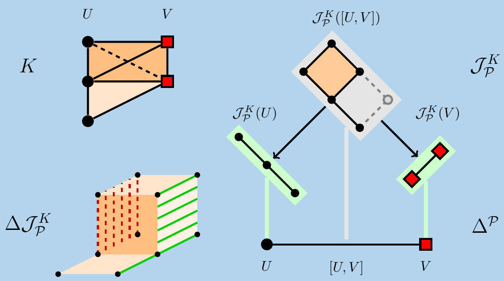
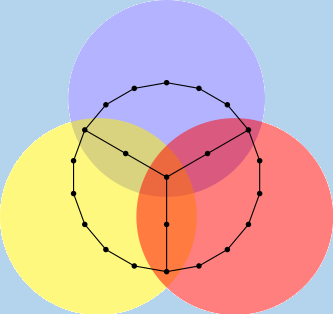
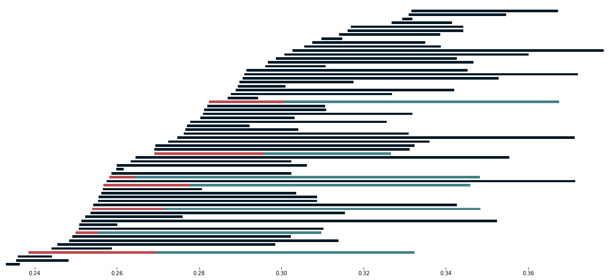

Preprints
|

|
Interleaving Mayer-Vietoris spectral sequencesÁlvaro Torras Casas, Ulrich Pennig Abstract: We discuss the Mayer-Vietoris spectral sequence as an invariant in the context of persistent homology. In particular, we introduce the notion of ε-acyclic carriers and ε-acyclic equivalences between filtered regular CW-complexes and study stability conditions for the associated spectral sequences. We also look at the Mayer-Vietoris blowup complex and the geometric realization, finding stability properties under compatible noise; as a result we prove a version of an approximate nerve theorem. Adapting work by Serre we find conditions under which ε-interleavings exist between the spectral sequences associated to two different covers. |
|

|
Distributing Persistent Homology via Spectral SequencesÁlvaro Torras Casas Abstract: We set up the theory for a distributive algorithm for computing persistent homology. For this purpose we develop linear algebra of persistence modules. We present bases of persistence modules, and give motivation as for the advantages of using them. Our focus is on developing efficient methods for the computation of homology of chains of persistence modules. Later we give a brief, self contained presentation of the Mayer-Vietoris Spectral sequence. Then we study the Persistent Mayer-Vietoris Spectral Sequence and present a solution to the extension problem. Finally we outline applications of our results for Vietoris-Rips complexes, cubical complexes and \(\alpha\)-complexes. |
Code
|

|
PerMaViss: Persistence Mayer Vietoris spectral sequenceÁlvaro Torras Casas This is an implementation of the Persistence Mayer Vietoris spectral sequence for computing persistent homology. For complete documentation, see permaviss.readthedocs.io. Visit the repositiory here PerMaViss. |
Recorded Talks
A Short Tutorial on Computing Persistent Homology Using Spectral Sequences, AATRN tutorial-a-thon, 16th November 2021.
Persistent homology: Bridging local to global information by example, Topology Seminar, Universitat de Barcelona, 1st of December 2020.
The Persistence Mayer-Vietoris spectral sequence, AATRN, 5th of August 2020.
Talks
Persistence Mayer-Vietoris Spectral Sequences by example, IST Austria, Geometry/Topology seminar, 19th of May 2021.
Getting Started with Topological Data Analysis, Universidad Surcolombiana, Mathematics Department, 15th of March 2021.
The Persistence Mayer-Vietoris spectral sequence, Swansea University, Algebra & Topology Seminar, 25th of February 2020.
The Persistence Mayer-Vietoris spectral sequence, University of Oxford, Topological Data Analysis seminar, 1st November 2019.
Persistent Homology for Large Datasets, MS50 Numerical Methods to advance Mathematical biology research (part 2), EnuMath2019, Egmond aan Zee, The Netherlands, 30th September - 4th October.
Input-Distributive Persistent Homology, YTM 2019, EPFL, 22nd - 26th July.
Input-Distributive Persistent Homology, ECTR 2019, University of Sheffield, 6th of June 2019.
Input-Distributive Persistent Homology, Guest talk at Topology Seminar, Universitat de Barcelona, 29th of May 2019.
Input-Distributive Persistent Homology, 2019 Welsh Mathematical Colloquium, Gregynog Hall, 21st of May 2019.
Input-Distributive Persistent Homology, GAPT seminar, Cardiff University, 21st of March 2019.
Distributing Persistent Homology using Spectral Sequences, Postgraduate Seminar, University of Leicester, 5th of December 2018.
Distributing Cohomology Computations via Sheaf Cohomology, 2018 Welsh Mathematical Colloquium, Gregynog Hall, 22nd of May 2018.
Teaching at Cardiff University
Autumn 2020, Tutor in Calculus of Several Variables.
Spring 2020, Tutor in Elementary Differential Equations.
Autumn 2019, Tutor in Geometry.
Spring 2019, Tutor in Foundations II.
Spring 2019, Tutor in Finance I.
Autumn 2018, Tutor in Geometry.
Autumn 2017, Tutor in Linear Algebra.
Additionally, I have been a Maths Support tutor from Spring 2017 until Spring 2021. This is a drop-in service where students with mathematical questions can get help. This is provided by the Cardiff University School of Mathematics.
Other Responsibilities
Co-Organizer of TopFlavours 2021 online conference together with Igor Sikora.
Awards
SIAM recognition certificate for the Cardiff Student Chapter on 2020-2021.
Grants
EPSRC studenship reference EP/N509449/1 number 1941653. Project: Persistent Sheaf Cohomology. Start 01/10/2017 end 31/03/2021.
Santander Master's Scholarship Award 2016-1017, University of Leicester. £5000 towards reducing student fees.